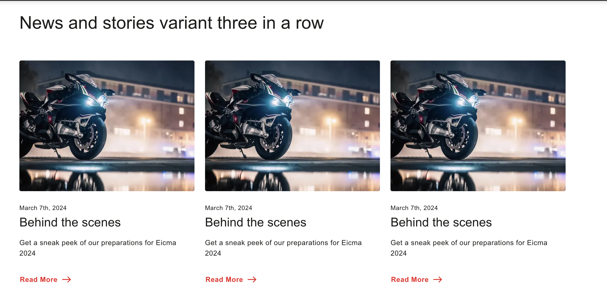
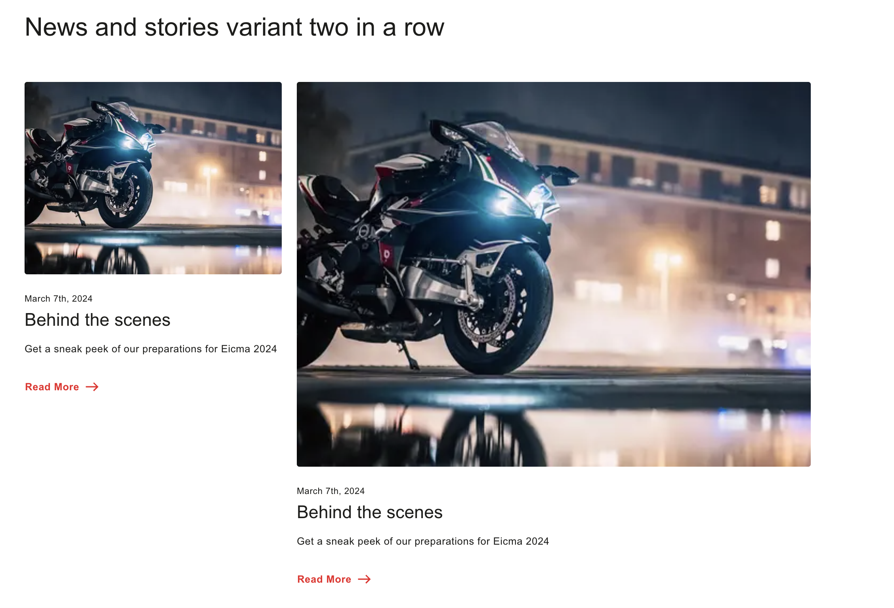
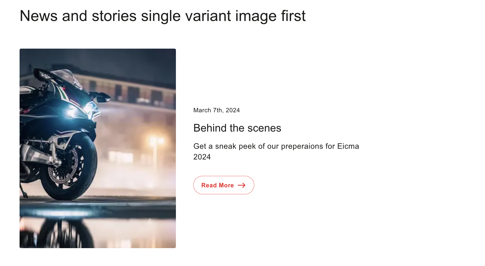
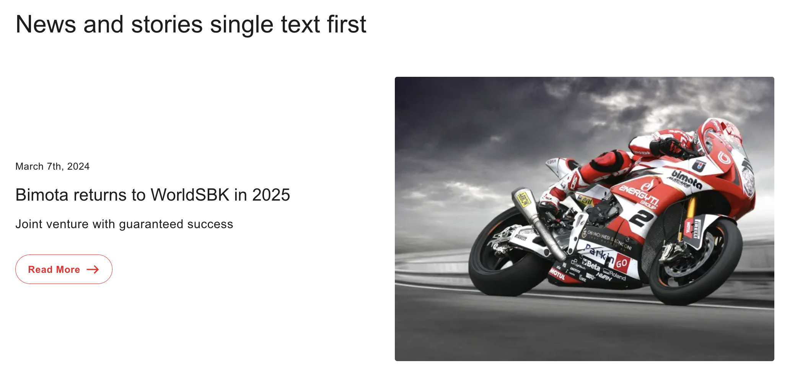

News / Stories
Card container for news/stories, in 4 layout variations (rows of three, rows of two, and two single-card splits).
The news and stories component is a container for cards. This can be used on the website news section or latest stories section. It contains images with description in 4 different variations.
The 4 variations
- News and stories - rows of three
- News and stories - rows of two, where the second card is bigger
- News and stories - 1 card, 33% image + 66% text
- News and stories - 1 card, 50% text + 50% image
Adding the block
Use the Library section from the da.live tool and choose the relevant block from the list available. Or use the template folder in your specific country and navigate to the page inside which consolidates all available blocks — copy the News/Stories block from there and paste it into your desired document.
1. Rows of three
Block name: News-stories (row-three). Add one image + pre title/title/description row per card; the block arranges every three cards into a row.
2. Rows of two (second card bigger)
Block name: News-stories (row-two). Same row shape as above, but arranged two per row with the second card in each pair rendered larger.
3. Single card, image first (33% image + 66% text)
Block name: News-stories (single, one-two). A single card where the image takes roughly a third of the width and the text two-thirds, image shown first.
4. Single card, text first (50% text + 50% image)
Block name: News-stories (single, one-one). A single card split evenly between text and image, with the text column shown first (image on the right).
Mixing variations
You could also stack a mix & match of different variations together on the same page to build a richer news/stories section.
What you fill in
| Header row | Sets the variant: News-stories (row-three), (row-two), (single, one-two), or (single, one-one). |
| Image cell | One image per card. |
| Pre title | Small label above the title, e.g. a date like "March 7th, 2024". |
| Title | Bolded headline, e.g. "Behind the scenes". |
| Description | Supporting text, shown with an automatic “Read More” link/button. |

Rows-of-three variant rendered live.

Rows-of-two variant, with the second card rendered bigger.

Single card, image-first (33% image + 66% text) variant.

Single card, text-first (50% text + 50% image) variant.
Copy/paste snippet
| News-stories (row-three) | | |---|---| | <<add image here>> | <<pre title>><br>**<<title>>**<br><<description>> | | <<add image here>> | <<pre title>><br>**<<title>>**<br><<description>> | | <<add image here>> | <<pre title>><br>**<<title>>**<br><<description>> |